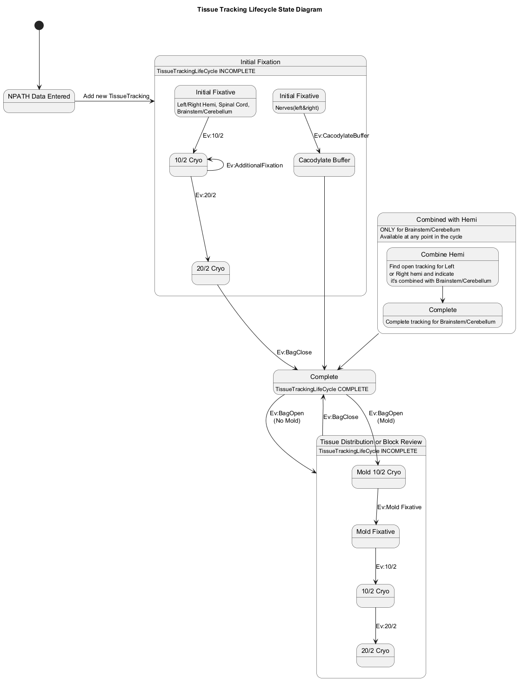

@startuml
'skinparam svek true
title Tissue Tracking Lifecycle State Diagram
[*] --> npathdata
state "NPATH Data Entered" as npathdata {
}
state "Initial Fixation" as Initial {
state "Initial Fixative" as InitialFixative{
}
InitialFixative: Left/Right Hemi, Spinal Cord,\nBrainstem/Cerebellum
state "10/2 Cryo" as TenTwo{
}
state "20/2 Cryo" as TwentyTwo{
}
state "Initial Fixative" as InitialFixativeNerves{
}
InitialFixativeNerves: Nerves(left&right)
state "Cacodylate Buffer" as Cacodylate{
}
InitialFixative --> TenTwo : Ev:10/2
TenTwo --> TwentyTwo : Ev:20/2
TwentyTwo -down-> Complete : Ev:BagClose
TenTwo -up-> TenTwo : Ev:AdditionalFixation
InitialFixativeNerves --> Cacodylate: Ev:CacodylateBuffer
Cacodylate -down-> Complete
}
Initial: TissueTrackingLifeCycle INCOMPLETE
state "Tissue Distribution or Block Review" as TissueDistribution {
state "Mold 10/2 Cryo" as TenTwoMold{
}
state "Mold Fixative" as MoldFixative{
}
state "10/2 Cryo" as TenTwoNonInitial{
}
state "20/2 Cryo" as TwentyTwoNonInitial{
}
Complete --> TenTwoMold : Ev:BagOpen\n(Mold)
TenTwoMold --> MoldFixative : Ev:Mold Fixative
MoldFixative --> TenTwoNonInitial : Ev:10/2
TenTwoNonInitial --> TwentyTwoNonInitial : Ev:20/2
}
TissueDistribution : TissueTrackingLifeCycle INCOMPLETE
state Complete{
}
Complete: TissueTrackingLifeCycle COMPLETE
state "Combined with Hemi" as CombinedHemi{
state "Combine Hemi" as FindHemi{
}
FindHemi: Find open tracking for Left \nor Right hemi and indicate\n it's combined with Brainstem/Cerebellum
state "Complete" as CompleteBCcycle{
}
CompleteBCcycle: Complete tracking for Brainstem/Cerebellum
FindHemi --> CompleteBCcycle
}
CombinedHemi: ONLY for Brainstem/Cerebellum
CombinedHemi: Available at any point in the cycle
npathdata -right-> Initial : Add new TissueTracking
Complete --> TissueDistribution : Ev:BagOpen\n(No Mold)
TissueDistribution --> Complete: Ev:BagClose
CombinedHemi --> Complete
@enduml